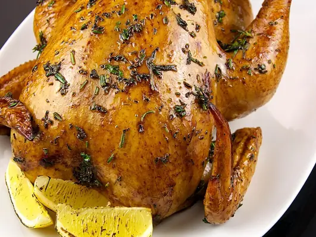

Фото: Evan Swigart from Chicago, USA, CC BY 2.0

Курица целиком в духовке
Целая курица с чесноком и паприкой, хрустящая корочка без майонеза
100 мин5 порц.672 ккал на порциюБ 52 · Ж 51 · У 2Русская кухня
Продукты на 5 порц.
- Курица целая1 шт
- Чеснок3 зуб.
- Паприка1 ч. л.
- Сушёные травы1 ч. л.
- Соль2 ч. л.
- Перец чёрный молотый2 щеп.
- Растительное масло2 ст. л.
- Лимон по желанию1 шт
Как готовить
- Достаньте курицу из холодильника за 30 минут до готовки. Промокните её бумажным полотенцем снаружи и внутри.
- Смешайте масло, соль, перец, паприку, травы и раздавленный чеснок.
- Натрите курицу смесью со всех сторон. Внутрь положите лимон, разрезанный на 4 части, если используете.
- Свяжите ножки ниткой, кончики крыльев подверните под спинку, чтобы не подгорели.
- Положите курицу грудкой вверх в форму и поставьте в духовку на 180 °C (средний жар) на 70-80 минут.
- Каждые 20 минут поливайте курицу соком из формы.
- Проверьте готовность: проколите бедро у кости, сок должен быть прозрачным, без розового. Дайте курице постоять 10 минут и разрежьте.
Совет. Чтобы кожа была хрустящей, курицу нужно хорошо обсушить перед натиранием. Мокрая кожа не подрумянится, а сварится в собственном пару.